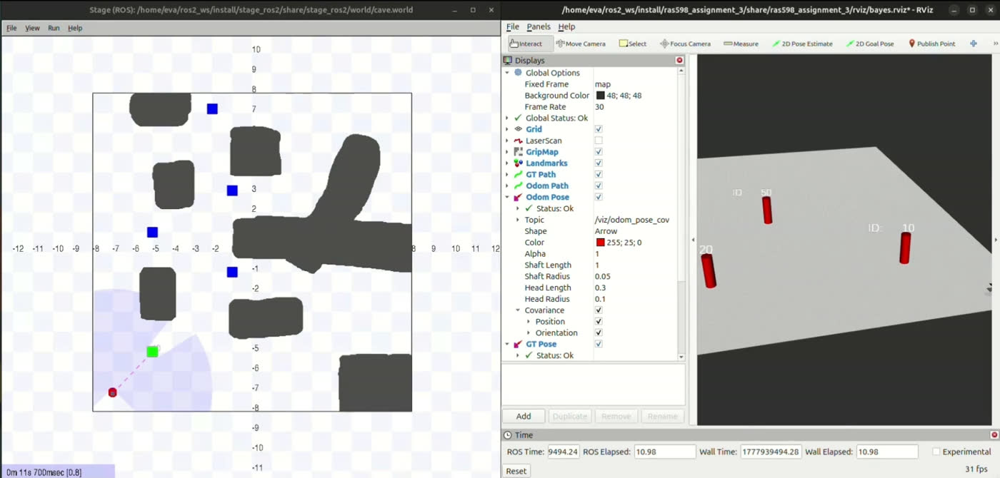
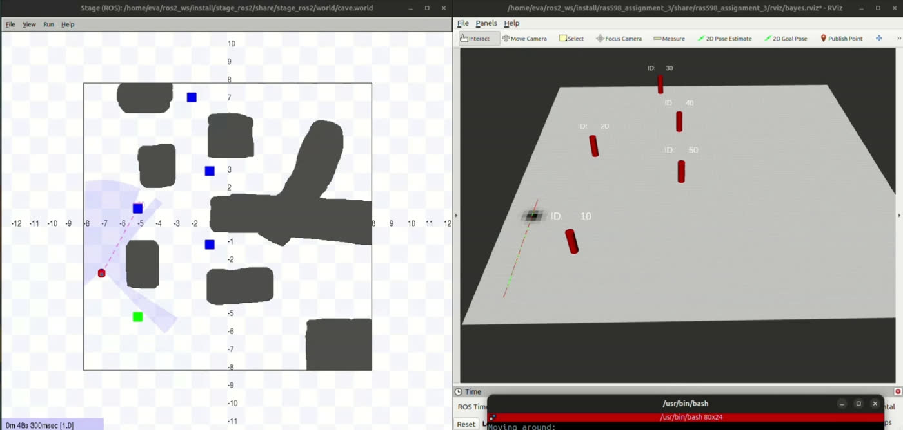
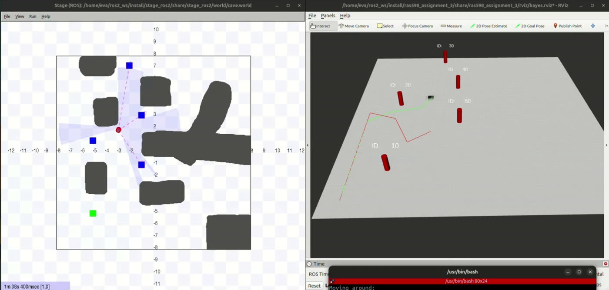
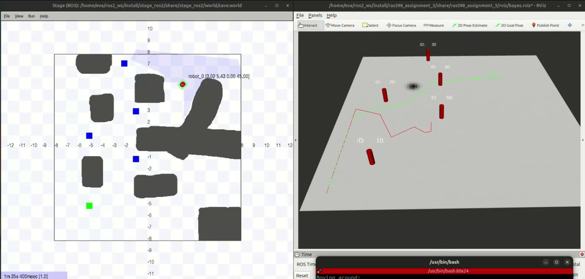
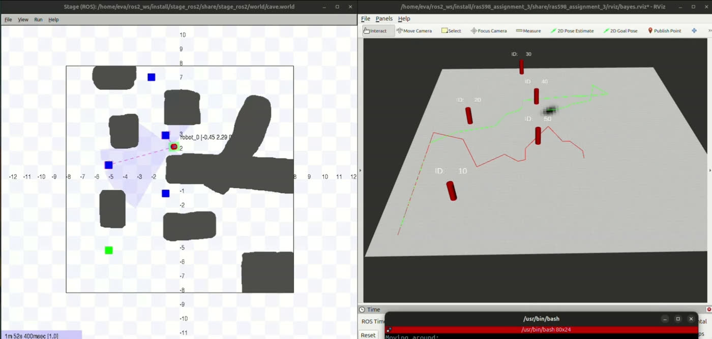

Where Am I? Answered as a Probability Cloud Over 460,800 Cells
This is a histogram filter I wrote to work out where a robot is inside a known 16 × 16 m cave. Instead of keeping a single best guess, it keeps a probability for every possible (x, y, θ), stored as an 80 × 80 × 72 NumPy array. Noisy Turn-Go-Turn odometry pushes that belief forward, and range and bearing to fiducial landmarks pull it back into shape. The part worth watching is the shape itself. It starts as a blob, stretches into an ellipse, bends into an arc and finally sharpens into a peak, and each of those is the robot telling you how unsure it is.
Chop the world into cells and stay inside the array.
A histogram filter makes a simple trade. You give up the neatness of a Gaussian, and in return you can represent any shape of uncertainty, whether that's several peaks, a ring or a banana, without assuming anything. The price is that the whole state space sits in memory. Here that means 80 × 80 cells of 0.2 m covering ±8 m, times 72 heading bins of 5° each.
The coordinate mapping is the part that quietly ruins everything if it's wrong. I
flipped the row index so that row 0 is y = +8 m, the top of the map. That
matches the np.flipud convention the costmap publisher uses, so what you see in
RViz lines up with what's actually in the array.
iy = int((8.0 − y) / res) 0 is the top row, y flipped to match np.flipud
ith = int(θ % 360 / θ_res) % 72 heading wrapped into 72 bins
Going the other way, grid_to_real() hands back (rx, ry, rθ) as whole
arrays covering every cell at once. That one choice is why the measurement update
is a few lines of NumPy rather than three nested Python loops crawling over 460,800 cells.
Moving is a turn, a drive, another turn, and a little blur.
I break the odometry between two poses up the classic way. δ_rot1 turns the robot to face where it's going, δ_trans drives it there, and δ_rot2 turns it to its final heading. Each step is applied by rolling the belief array along the right axis. That's what keeps prediction cheap, since shifting a distribution becomes an indexing operation instead of a convolution.
The drive step is the tricky one. Each θ slice has to move in its own direction.
If a cell thinks the robot faces east, its probability moves east, and if it thinks north,
it moves north. So I work out the shift for each heading from cos θ and
sin θ. After every prediction I apply Gaussian diffusion
(σ = 0.5). That's the process noise, and it's why the belief spreads out whenever
the robot drives without seeing anything.
Every cell asks itself what the robot would see from there.
Whenever a fiducial is detected, I compute the range and bearing to that landmark from every cell in the grid at the same time. Each one is compared to the real measurement through a Gaussian likelihood with σ_r = 0.5 m and σ_b = 15°. Multiply that into the belief cell by cell, renormalize, and that's it. It's textbook Bayes, just written as array math.
Bel(x) = η · p(z|x) · Bel̄(x) multiply cell by cell, then renormalize
| Model | Parameter | Value |
|---|---|---|
| Belief grid | x, y resolution | 0.2 m over ±8 m (80 × 80) |
| Belief grid | θ bins | 72 (5° each) |
| Motion | process noise σ | 0.5 (Gaussian diffusion) |
| Measurement | σ_r · σ_b | 0.5 m · 15° |
| Start pose | known initial state | (−7, −7, 90°) |
What uncertainty looks like as it shrinks.
The most useful thing this filter shows isn't its estimate. It's the shape of the belief, and every shape has a reason you can point to.
At the start it's a tight round blob at (−7, −7), because I told it where the robot begins. Once the robot drives without seeing anything, each θ slice shifts and blurs, and the x and y belief stretches into a long ellipse pointing along the direction of travel. Position gets less certain faster along the path than across it, and heading grows fuzzier at the same time. After one landmark, the range term pins the robot to a ring at the measured distance, and the bearing term trims that ring down to a crescent. The robot knows how far away the landmark is, but not which side it came from. After two or three different landmarks, those arcs cross and the whole distribution collapses into a small peak within 0.6 m of the true position.



I learned the most when I broke it on purpose.
When I teleported the robot partway through a run, the filter did something that told me a lot: nothing at all. The belief stayed parked, completely sure of itself, at the old position. A histogram filter can only move around probability it already has, and once it has converged, the cells at the new location hold almost none. It has no way to create belief out of nothing.
Driving back past landmarks helped a little, as the likelihoods reweighted the tiny amount of probability left over. Getting all the way back needs either a reset to a uniform prior or a particle filter that injects random particles, which exists precisely to keep a few guesses alive everywhere. Watching this failure happen made it very clear why particle filters exist.


What I took away from it.
A single pose estimate throws away the interesting part. The distribution says far more than the number that comes out of it. An ellipse means "I've been driving blind," an arc means "I've seen one landmark," and you can act on either of those in a way you can't act on a bare (x, y, θ). I also came away convinced about vectorizing. Updating 460,800 cells per sighting is easy as array math and hopeless as Python loops, and it only works because the grid coordinates come back as arrays instead of being looked up one cell at a time. Finally, it's worth knowing how a filter fails before trusting it. The kidnapping test wasn't me hunting for a bug. It showed me exactly where this algorithm stops being the right tool.